Focus & Attention: Mastering Your Mind in a Distracting Economy
Mastering your mind in a distracting economy - practical protocols to reclaim attention and break the ping-scroll loop.
Focus & Attention: Mastering Your Mind in a Distracting Economy
In the relentless current of the modern attention economy, our ability to sustain focus is constantly challenged. Endless digital stimuli, from notifications to social feeds, are expertly crafted to hijack our neural reward circuits. This guide reveals the cutting-edge science of how dopamine dictates our attention and drive, and provides practical strategies to reclaim your mental landscape, enabling deeper work and a more intentional life.
The Dopamine Compass: Navigating Your Attention
Myth vs. Mind: Why Novelty and Unpredictable Rewards Hijack Our Attention
The human brain is intrinsically wired to seek novelty and unexpected rewards. This ancient survival mechanism, which once helped us discover new resources, is now expertly exploited by digital platforms. When an unread message pings or a new post appears, our brain's reward circuit releases dopamine, making these novel cues irresistibly salient. 1
This isn't just a casual pull; it's a profound neurological response. Dopamine neurons in the midbrain emit rapid, phasic signals that encode "reward prediction errors." They fire bursts when an outcome is better than expected and pause when it's omitted. This powerful learning signal underpins how apps train us to constantly check for new information. 2
The variable reward schedules employed by social media feeds and inboxes are particularly potent. Much like a slot machine, the intermittent and unpredictable nature of these rewards drives persistent, high-rate checking behavior, even when the actual content is often trivial. 3 Our brains are constantly pushed to explore, ensuring our attention remains fragmented across numerous, tiny dopamine hits. 4
The Wanting-Liking Paradox: Why We Chase What Doesn't Satisfy
A crucial insight from neuroscience is the distinction between "wanting" (incentive salience) and "liking" (hedonic pleasure). While we often assume that strong desire implies enjoyment, research shows that the mesolimbic dopamine system is primarily responsible for the motivational drive to pursue rewards – the "wanting" – but not for the actual pleasure derived from consuming them – the "liking." 5
This paradox is strikingly evident in digital habits. We may feel an intense "wanting" to check an app due to a notification, experiencing a surge of dopamine and an urge to seek the reward. Yet, the actual "liking" or satisfaction from the content found might be minimal or fleeting. 6 Animals with depleted dopamine, for instance, still display normal pleasure reactions to sweet tastes, but lose the motivation to work for them. 7 This explains why we often find ourselves compulsively scrolling or checking even when the experience itself isn't truly gratifying, caught in a loop of desire without deep fulfillment. 8
The Cost of Constant Stimulation: Reclaiming Your Dopamine Baseline
Our brains are not designed for the continuous bombardment of digital stimuli. Frequent task-switching, often mistaken for productivity, exacts a heavy cognitive toll, leading to "attention residue" where parts of our mind remain stuck on previous tasks. 9 This constant context-switching and the resulting micro-dopamine hits from superficial tasks can lead to a state of dopamine "overdrive," leaving our baseline levels depleted and making it harder to feel motivated by less stimulating, but often more meaningful, activities. 10
Paradoxically, this state of overstimulation can make calm, focused work feel dull and unrewarding. Our dopamine receptors become desensitized, requiring ever-greater external stimuli to feel "normal." The good news is that this is reversible. Taking short, deliberate breaks between intense tasks and intentionally designing single-context environments can help reset dopamine levels, allowing the brain to recover sensitivity and restoring its capacity for deep, sustained attention. 11 By reducing the "noise," we enable our neurochemistry to rebalance, making genuine accomplishment a more powerful reward.
The Ping/Scroll Loop: A Vicious Cycle Explained

Figure 1: The Ping/Scroll Loop illustrates how an external cue or boredom triggers anticipation and craving (dopamine spike), leading to checking behavior. This can result in either a variable reward ("hit") or no reward ("miss"), both of which reinforce the cycle and increase craving for the next interaction. Strategic intervention points (dashed lines) can break this loop.